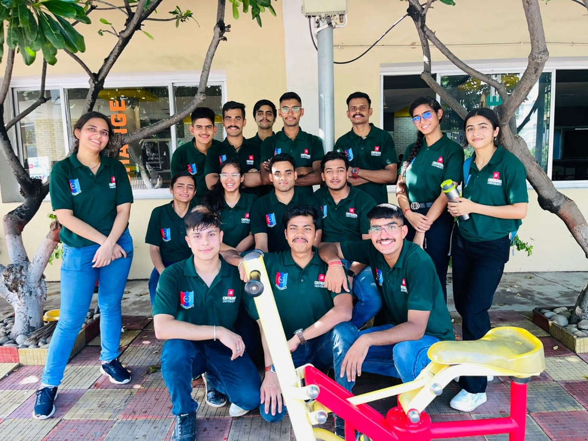
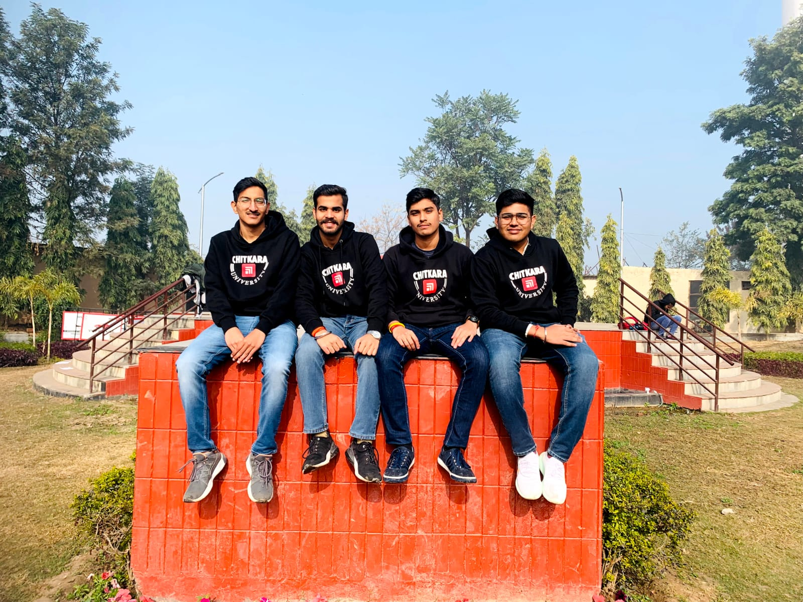
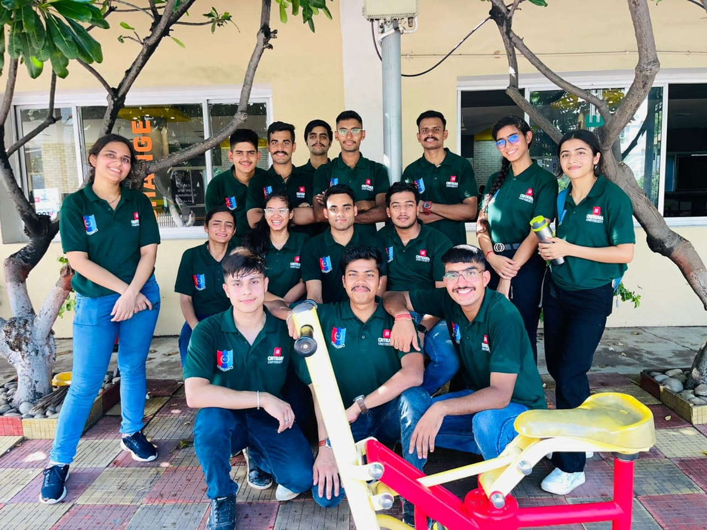
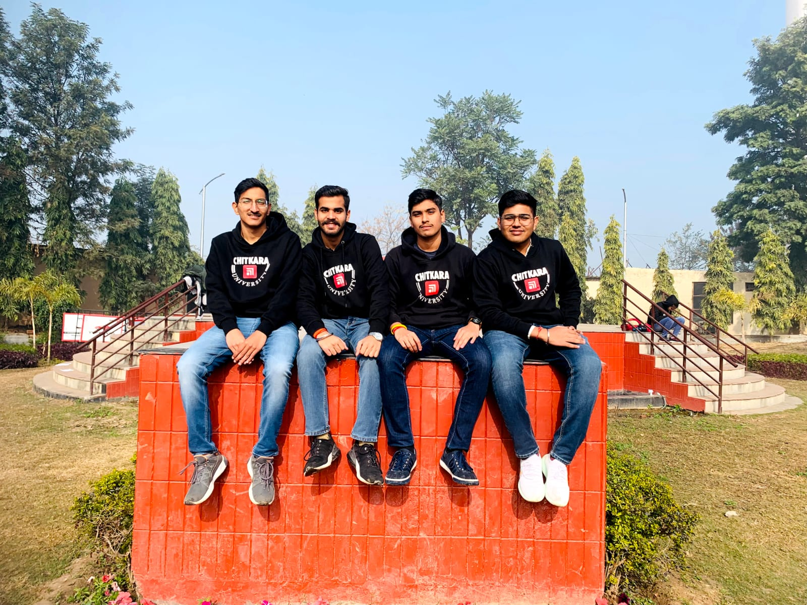
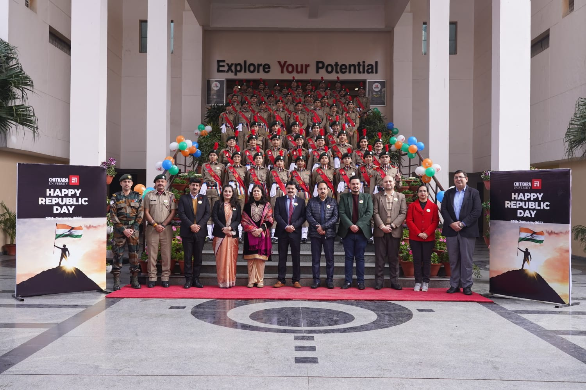
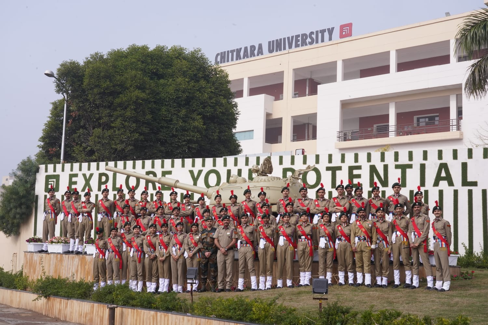
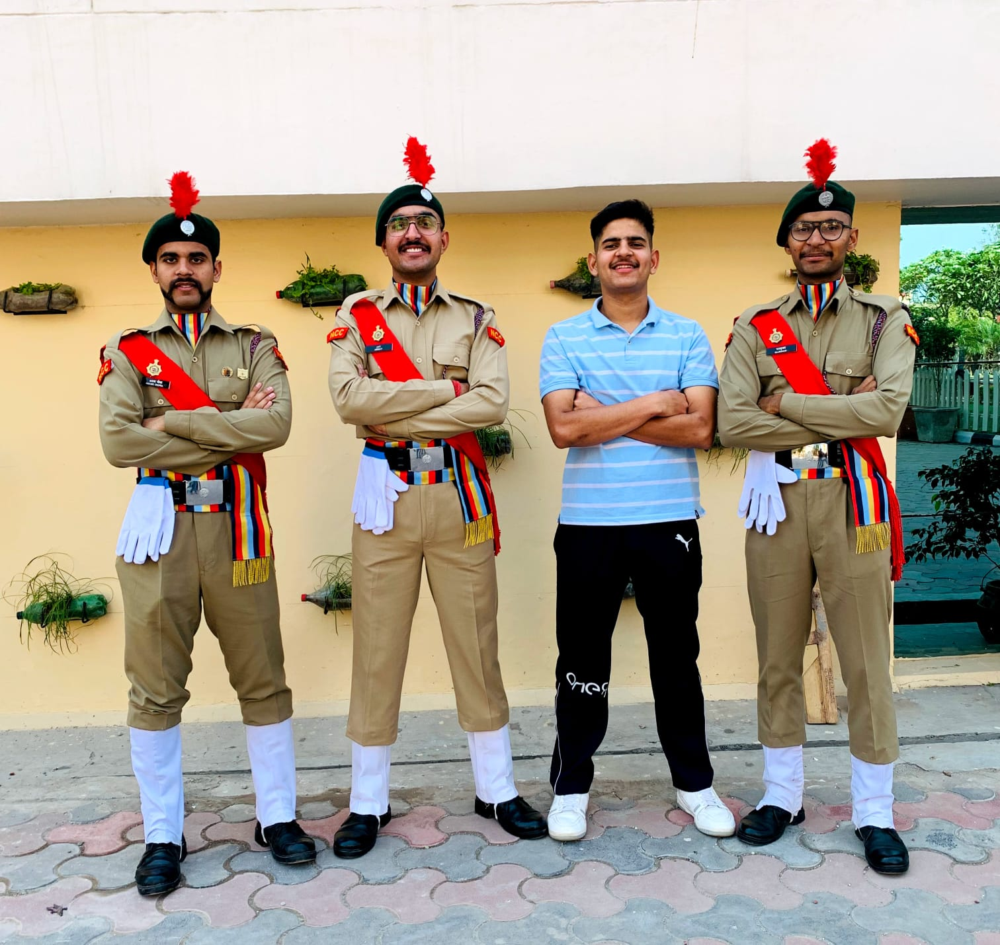
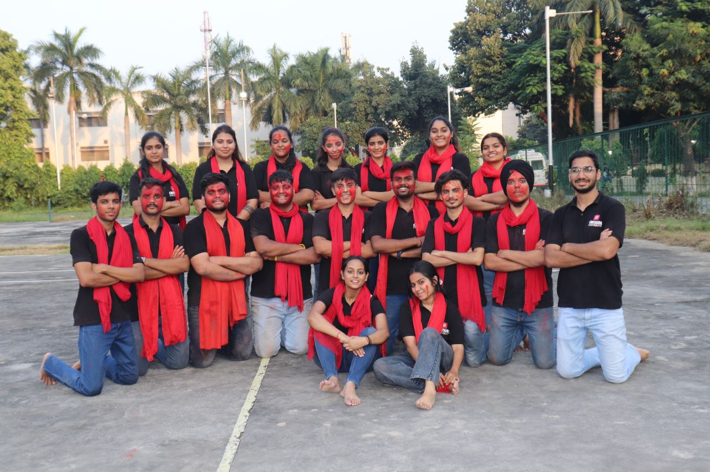

- Soft Skills
- • Communication
- • Adaptability
- • Integrity & Ethics
- • Mindfulness & Wellness
- • Analytical Skills
- Indepth Knowledge about:
- 1. Information Security
- 2. Network Security
- 3. Cryptography
- 4. Steganography
- 5. WAPT
- 6. VAPT
- 7. Linux & Virtual Machines
- 8. Cloud Computing [AWS]
- 9. Linux Tools
- 10. OWASP
- 11. Forensics - Disc
- 12. Malware Analysis
- 13. Auditing & Compliance
- 14. Front End Development
Photo Gallery
CATC Camp 142 👇

 



Republic Day Event 2023 👇
  IIT Roorkee [Tamashbeenz] 👇
👋 Hey there! I'm Aakash Chopra
Welcome to my corner of the web! I'm currently immersed in the world of Cyber Security, pursuing my B.E in Computer Science at Chitkara University.💻
With a keen interest in Cyber Security, I'm dedicated to understanding and enhancing digital defenses. I'm passionate about creating a secure online environment and exploring the intricacies of this ever-evolving field.🌐
Education 📚

Bachelor's of Computer Science Engineering [B.E]
Chitkara University
2020 → 2024
[CGPA - 8.76 (CURRENT)]
I am currently pursuing my Bachelor's degree in Computer Science at Chitkara University, Himachal Pradesh, with a specialization in Cyber Security. This program, emphasizing planning, designing, and building complex software solutions, aligns with my passion for securing digital environments.
For More Info

Higher Secondary
Bal Bharati Public School, Noida
2005 → 2020
[+2 CGPA - 8.7 (PCMB + PSYCH)]
I completed my Higher Secondary Education at Bal Bharati Public School, Noida. This
institution stands among the highly reputed schools in the locality, known for its
unwavering commitment to quality education.
During my years at Bal Bharati, I was exposed to an environment that set high standards of
teaching, fostering an atmosphere where students are encouraged to excel. The school
believed in the competence of its students, inspiring us to achieve greatness and reach our
full potential.
For More Info
Tools & Technologies 🔧💻
Cyber Security Tools & Frameworks
Front End Coding, Tools & Frameworks
OS
Cloud Computing
Projects 👨💻
1. ARP Spoof Analyser → Project
It's a Python script that uses the Scapy library to perform ARP (Address Resolution Protocol)
monitoring on a Wi-Fi interface. The script appears to check
for ARP packets and then
analyzes the ARP table for dynamically assigned MAC addresses.If a MAC address is detected
multiple times, it raises an alert,
suggesting a potential attack.
2. Keylogger → Project
It's a Python script using the pynput library to monitor mouse and keyboard events. This script logs mouse movements, clicks, and scrolls, as well as keyboard key presses. The logs are then written to a file named "LogData.txt" with timestamps.
3. FrontEnd CV → Project
I independently designed and deployed my curriculum vitae (CV) using front-end technologies, hosted on Netlify, which also incorporates my comprehensive resume. This initiative demonstrates my proficiency in web development, showcasing both the aesthetic and functional aspects of user interface design. The CV, accessible online, presents my professional journey, skills, and achievements in a visually appealing and user-friendly format.
Capture the Flag 🏴📈
1. DownUnderCTF - Ranked 301/2083 🏅🏆 [1st Sep - 3rd Sep 2023]
2. PatriotCTF - Ranked 111/1024 🎉🏆 [8th Sep - 10th Sep 2023]
3. DeadFaceCTF - Ranked 73/1206 🏅🌟 [20th Oct - 22nd Oct 2023]
4. SpookyCTF - Ranked 34/372 👏🏆 [27th Oct - 29th Oct 2023]
Experience & Achievements 🏆
TryHackMe [University Level]
November 2022 - Present (1 Yr)
𝐓𝐨𝐩 𝟏𝟓% 𝐓𝐇𝐌 𝐓𝐫𝐲𝐇𝐚𝐜𝐤𝐌𝐞 - Achieved Level 7 [0x7], demonstrating my commitment to honing my cybersecurity skills and staying ahead in the field.

Cadet of National Cadet Corps [University Level]
November 2021 - Present (2 Yr 1 Month)
I joined the National Cadet Corps (NCC) at the university level, pursuing my passion for
service and dedication to the nation.
Currently holding Alpha (α) Grade in NCC B
certificate.

Promotion Head - CU ARCS [University Level]
July 2022 - November 2023 (1 Yr 4 Months)
Promotion Head of the University-Level Sports Club - CU ARCS.
I've been actively involved in organizing sports events and North Zone Inter-University
Volleyball Tournament.
In this role, I've contributed to the promotion and success of
various sporting activities, fostering a vibrant sports culture within the university.
Head of Event Management - Lung Care Foundation [School Level]
April 2018 - March 2020 (2 Yrs)
As the Head of Event Management at Lung Care Foundation, I played a pivotal role in spreading
awareness about air pollution and promoting
better lung health. Over the course of two
years, I successfully organized impactful webinars at both the national and international
levels,
contributing to the foundation's mission.
Certifications 📜
Google Cybersecurity Professional Certificate, Google (Achieved: September 2023)
It's a comprehensive online program designed to equip individuals with the essential skills and knowledge required for a career in cybersecurity. Developed by Google in collaboration with industry experts.
Certificate
Business English: Management and Leadership, Arizona State University,U.S (Achieved: July 2023)
This comprehensive program enhanced my communication and leadership skills, providing valuable insights into effective business communication strategies and management principles.
Certificate

Security Engineering for the IoT, Infosys Springboard (Achieved: June 2023)
This specialized training equipped me with in-depth knowledge and practical skills in securing Internet of Things (IoT) devices, contributing to my expertise in cybersecurity for connected systems.
Certificate

Completed AWS Certified Cloud Practitioner - 2023, Udemy (Achieved: July 2023)
This certification validates my foundational knowledge in cloud computing, demonstrating proficiency in AWS services and principles.
Certificate

Introduction to Cyber Security, Cisco Networking Academy (Achieved: January 2021)
This foundational course equipped me with essential concepts and skills in cybersecurity, laying the groundwork for a deeper understanding of digital security practices.